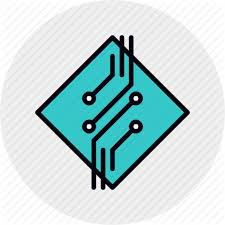

Networking hardware, also known as network equipment or computer networking devices, are electronic devices which are required for communication and interaction between devices on a computer network. Specifically, they mediate data transmission in a computer network.[1] Units which are the last receiver or generate data are called hosts, end systems or data terminal equipment.
Networking devices includes a broad range of equipment which can be classified as core network components which interconnect other network components, hybrid components which can be found in the core or border of a network and hardware or software components which typically sit on the connection point of different networks.
Network Manager offers unified network management and centralized automation of the complete device lifecycle across uniq technologies’s infrastructure of routing, switching and security products. This enables IT departments to improve network performance management efficiency and security while lowering operating costs.
We provide you excellent training in various domains that allows you to have hands on knowledge to placed in organization
Our coaching programs will let you bring a great career opportunity in the suitable fields and makes you unique from the external world
We are open to help you 24/7 on all inquiries, doubts, and support on In-Plant Training, Internship and projects for your comfort